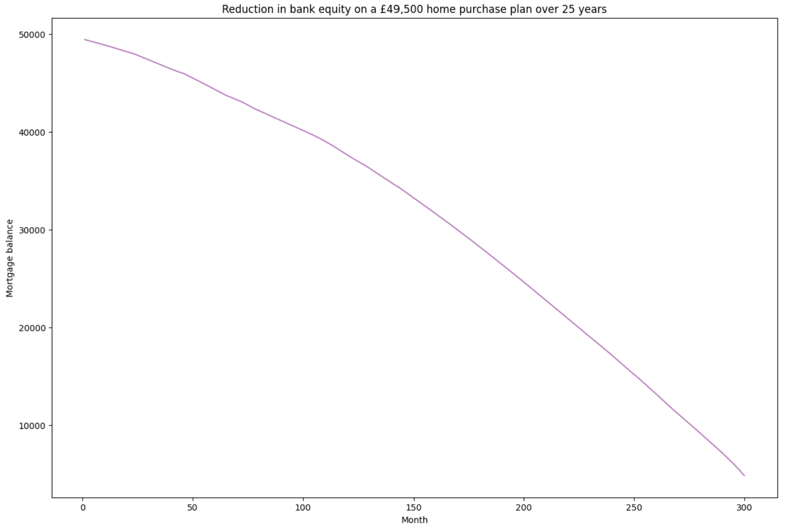

What is the total cost of an average mortgage?
Average mortgage plan in 1997, UK
Plan:
- House price: £55,000
- House type: Terraced house
- Deposit: £5,500 (10%)
- Advance: £49,500
- Term: 25 years (Dec 1997 - Dec 2022)
- Structure: 2 year fixed interest rate then variable interest rate
Missing data

Neural Network: 2 year fixed interest rates on 90% Loan-To-Value
Objective: Estimate what the interest rate could have been in 1997
Features:
- 2, 3 and 5 years fixed interest rate on 75% LTV
- Bank rate set by the Bank of England

Neural Network: Average variable mortgage rate

Objective: Estimate what the interest rate could have been in 2000-2003
Features:
- 2, 3 and 5 years fixed interest rate on 75% LTV
- Bank rate set by the Bank of England
- Exchange rate (Pound: Dollar & Euro)
- Unemployment rate
- Inflation (RPI)
Yearly payment breakdown
The home purchase plan
How does it work?
- Credit history: A record of repaying debts
- Capcity: Ability to repay a loan by looking at job stability and the borrower's debt to income ratio
- Collateral: In case the borrower fails to meet payments, the bank can seize an asset
- Capital: Savings, investments and other assets that can be used to contribute to the loan payment in case the borrower loses their job
- Conditions: The other details of the loan
The plan
Plan:
- House price: £55,000
- House type: Terraced house
- Deposit: £5,500 (10%)
- Cost for the bank: £49,500
- Term: 25 years (Dec 1997 - Dec 2022)
- Structure: 2 year fixed rent rate then variable rent rate
- Region: South West England
The main advantage & disadvantage
Reducing the risk

Neural network: Predicting the percentage change of an area's house prices
Objective: Predict the magnitude of the change in house prices in South West England
Features:
- Change in average UK house prices (%)
- Quarterly GDP change
- Unemployment rate
- Inflation (RPI)
- 2 years fixed interest rate on 75% LTV
- Average UK income